一条自府学文脉走来，一条沿胥江古水寻源。
双脚丈量，看见苏州两千五百年的来处。
主题：府学文脉 · 范仲淹创办苏州府学，读懂宋代碑刻与千年文庙。全程步行，半日可游。
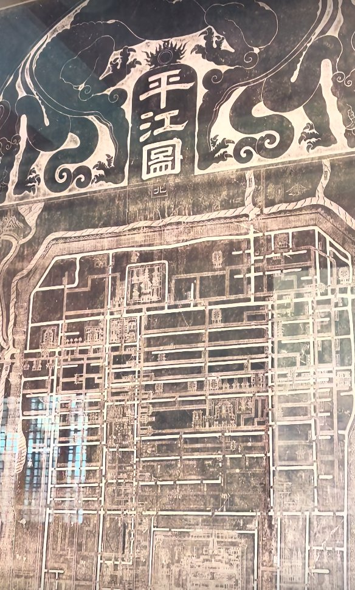
苏州文庙保存国内罕见的宋代四大碑刻：平江图、天文图、地理图、帝王绍运图。其中《平江图》刻于南宋，是中国现存最完整的古代城市石刻地图，完整还原宋代苏州古城的河道、街巷、桥梁、官署、寺庙布局。
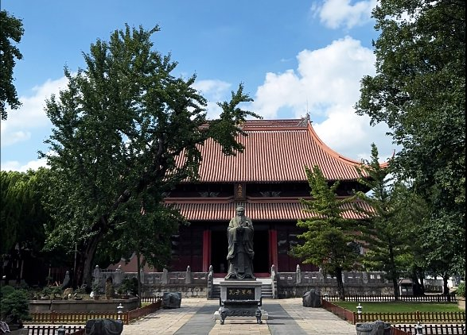
大成殿为文庙主体建筑，供奉孔子，保留珍贵楠木构件，体量宏大。苏州府学开“庙学合一”之先河——祭祀圣贤与地方教育合二为一，是江南府学的典范。
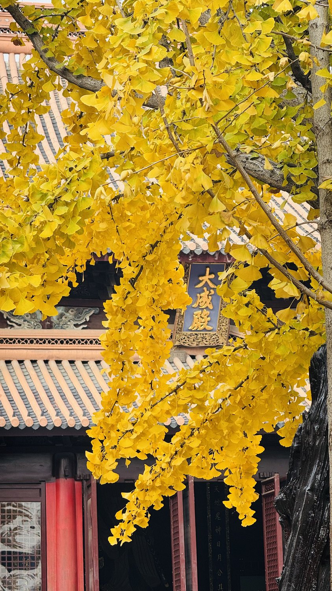
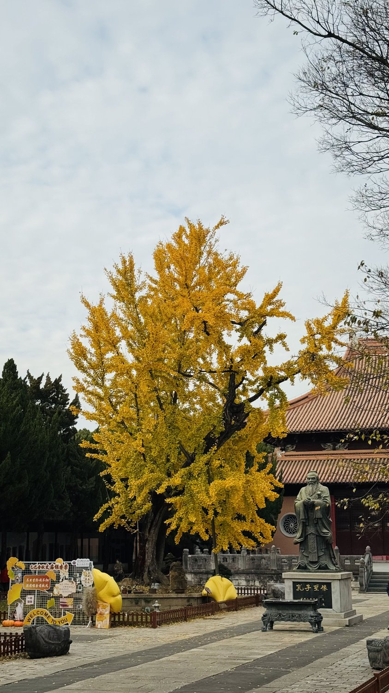
文庙院内古银杏树龄数百年，是文庙活着的历史见证。秋冬之际满树金黄，红墙金叶，氛围极浓。
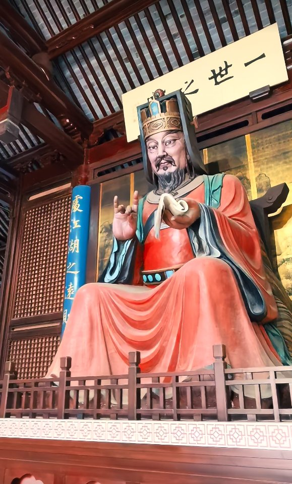
北宋景祐二年（1035），范仲淹知苏州，舍宅建学，创办苏州府学，是全国最早的地方官办学校之一。此后苏州文教兴盛、状元辈出，源头便在这座府学文庙。
主题：古城起源 · 伍子胥相土尝水筑阖闾大城；胥江古运河、万年桥、胥门——苏州建城的源头。
胥江，苏州最古老运河，相传由伍子胥主持开凿，连接太湖与胥门，是古代苏州对外水运要道。古人言“太湖东南泄水要道”，千百年来太湖水系经胥江滋养古城。
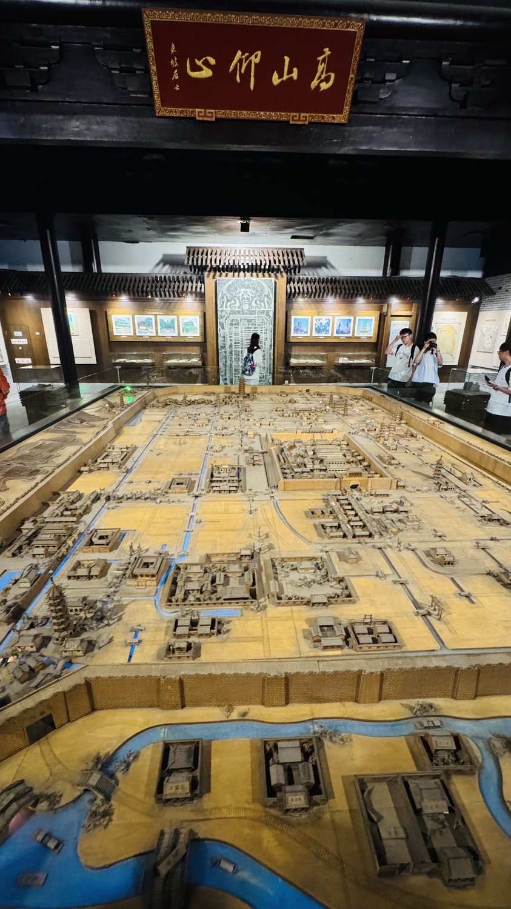
馆内拥有苏州最大的立体《平江图》沙盘，把宋代石刻平江图做成立体实景模型，街巷河道一目了然。
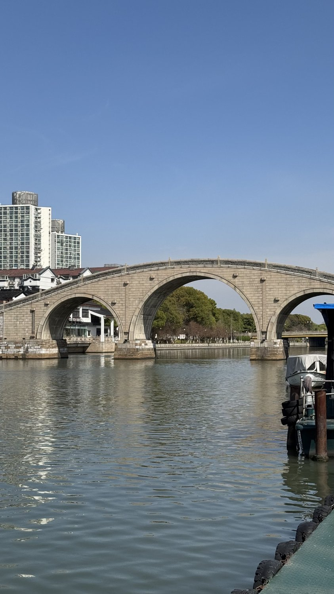
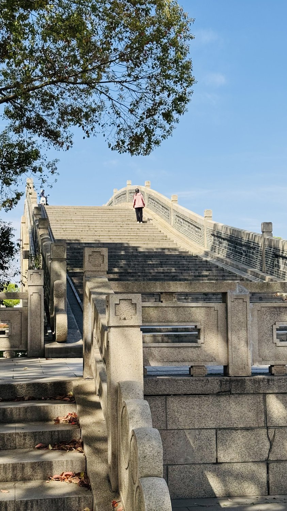
万年桥，苏州城西知名古桥，横跨胥江。明代始建，历经拆毁、重建，见证胥门码头数百年繁华。
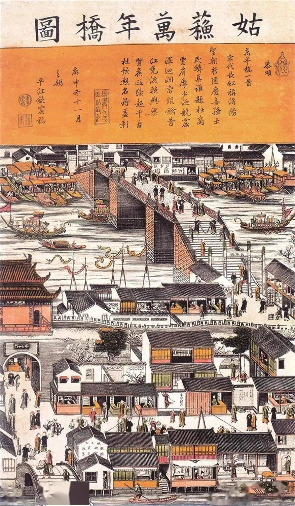
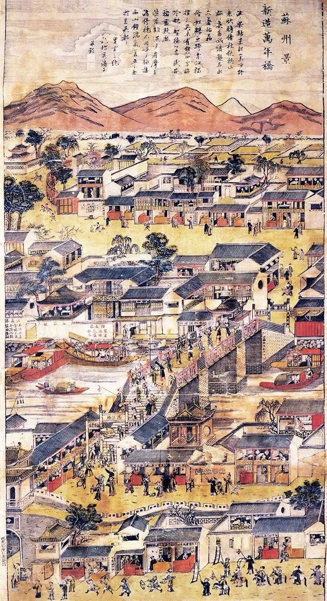
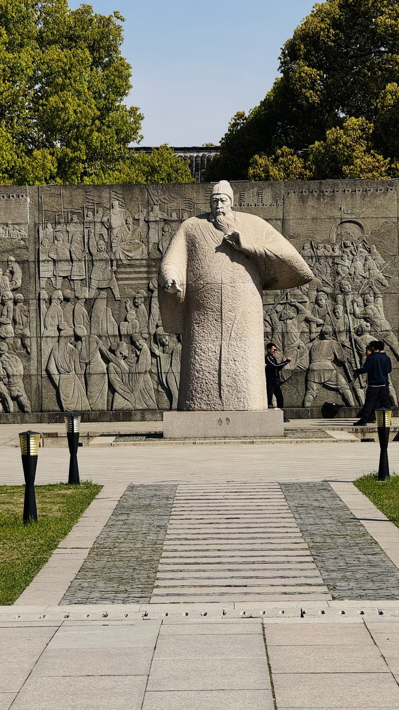
胥门是苏州现存残存古城门之一。公元前 514 年，伍子胥“相土尝水、象天法地”筑阖闾大城，奠定苏州古城两千五百多年的城市框架——胥门正是这场筑城伟业留下的西门。